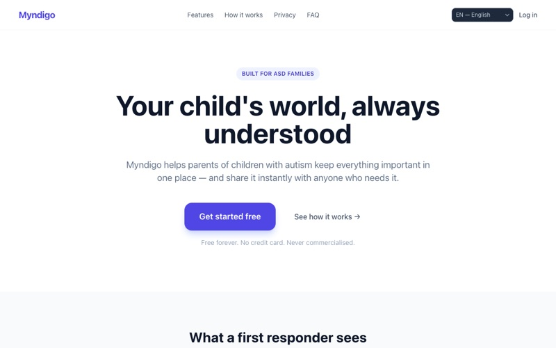
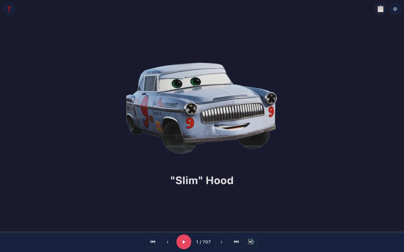
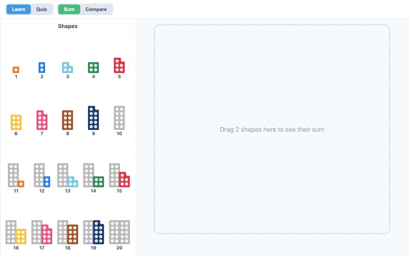
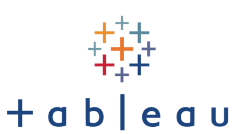
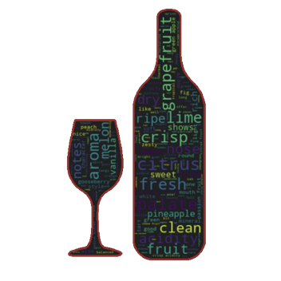

Myndigo
Web app that helps families of children with autism keep important information in one place and share it instantly via QR code or NFC (React, TypeScript)
Open appWeb apps, data analysis notebooks and test automation frameworks I build in my spare time.

Web app that helps families of children with autism keep important information in one place and share it instantly via QR code or NFC (React, TypeScript)
Open app
Browse 700+ Pixar Cars characters in a swipeable slideshow (plain HTML, CSS and JavaScript)
Open app
Interactive maths app for kids: learn Numicon shapes, drag two shapes together to see their sum, and practise with quizzes
Open appDive into books rating statistics and check if there is correlation between my and people ratings
Learn more
Visualization of data related jobs salaries using Tableau
Learn moreCheck if the study about NHL bias in favour of players born earlier in the year is actually true for current players (season 21-22)
Learn more
Using words cloud visualization with custom background for wine reviews data
Learn more
Test Automation Framework base for Frontend and Backend testing (based on Serenity)
Learn moreTest Automation Framework base for Frontend and Backend testing (based on .NET core and NUnit)
Learn more